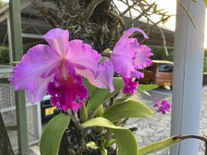

うるがいの話 ある日
最新: 脈拍数５５【うるがいの話 ある日】とは 一日だけのプログです
『うるがいの話』の最新一日だけのプログで、通信料が少なく経済的だ。カニの画像をクリックすると全ての日付が載る『うるがいの話』サイトを表示します
|
|
【うるがいの話】 うるがい(ｳﾙｶﾞｲ urugai)とは、『もずくがに』の名前でとても大きくなります。 |
|---|---|
|
|
【カミマヤーの話】 猫のことを方言でマヤーといいます。カミマヤー（kamimayaa）とは、神の猫のことです。 |
|
【たながぁの音楽】 たながぁ（ﾀﾅｶﾞｰ tanagaa）とは手長えびのことで、何種類かあり大きいのは車 エビぐらいになります。 |

|
【ぶながぁの話】 ぶながぁ(ﾌﾞﾅｶﾞｰ bunagaa)とは、赤い髪の毛、赤い身体、そして身長は１ｍ２０ｃｍ ぐらい、川の蟹を食べているの目撃された。場所は沖縄県国頭郡大宜味村のと ある村僕の隣近所に住んでいる爺さんから、聞いた話です。 |
|
|
【ギーマの話】 ギーマ(giima)とは、山原の里山に咲くスズランに似た、 花を付けます。実は食べられます、 気が付くと口の周りが紫になっています。 |
2024年09月19日 (木）脈拍数５５
17:26

今朝８時半ごろ、血圧測定をすると脈拍数が５５、血圧が９９／１３６。
朝は、脈拍数はだいたい６０近辺だが、５５はさすがに低い。大学の講義
で受講生が百名ほど、脈拍数を測ることがあった。そのとき、私は５８で
６０以下は数名だった。
『スポーツ心臓（日常的に運動されてる方は脈が遅くなることが多くスポ
ーツ心臓と呼んでいます）』、講義でもその話をしていたようだが。
バタフライピーの青い色が、隣から頂いた市販のものより薄い、数を２倍
にしたら、やたらトイレが近い。調べてみた
バタフライピーは排尿を促進し血圧を下げる。利尿効果により解毒作用や
デトックス効果もある。バタフライピーは伝統的に局所麻酔薬として使用
されており、痛みや腫れを和らげるのに役立つ。バタフライピーは不安を
鎮める効果があり、ストレスや不安を軽減。
フムフム、目や高血圧に良いとあったが、利尿作用、もしかして脈拍数に
も影響があるかも。次回から、レシピの通り３～４枚にすることにした。
なお、きのうの夜２２時の血圧測定は脈拍数が６６、血圧が９０／１４８
夜は、朝にくらべ脈拍は高く、血圧は低い。